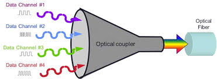
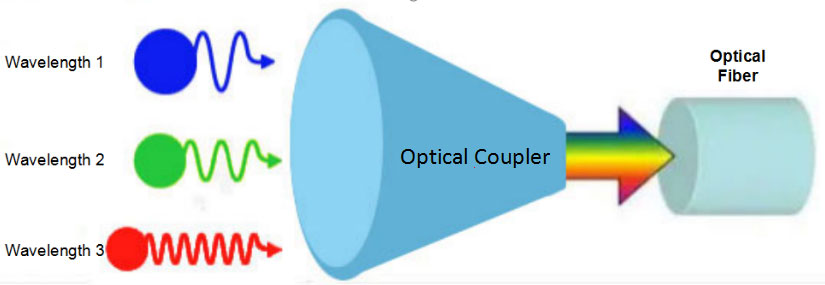

Introducción
WDM es una técnica aplicada a fibra óptica. Agrawal destaca su importancia en redes modernas.
Desarrollo
Cada señal se transmite con una longitud de onda distinta. Keiser señala que permite enormes capacidades de transmisión.


Conclusión
En conclusión, WDM maximiza el uso de la fibra óptica.